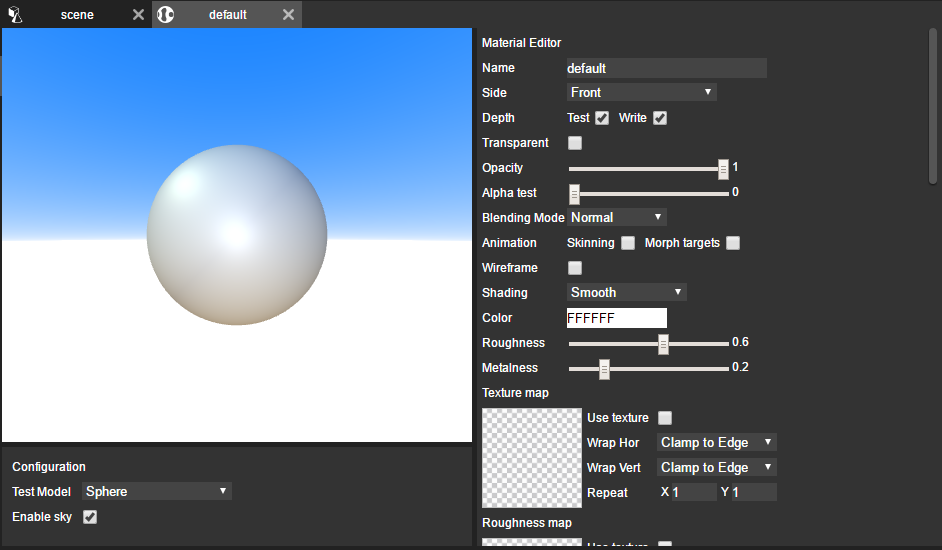

Materials describe the appearance of objects. Materials define how the object superficie is renderer and can have attached to them textures, colors, videos, etc.
There are various types of materials available inside nunuStudio. More information about material types can be found here. Here is a list of some of the most important material types:
Standard material - A standard physically based material. Physically based rendering (PBR) has recently become the standard in many 3D applications, such as Unity, Unreal and 3D Studio Max. More infomation abou PBR here.
Phong material - A material for shiny surfaces with specular highlight.
Lambert material - A material for non-shiny surfaces, without specular highlights.
Basic material - A material for drawing geometries in a simple shaded way. This material is not affected by lights.
Sprite material - Special type of material to be used with sprite objects.
Shader material - Shader materials can be customized using GLSL code.
The example bellow shows 4 different material types running, from the left to the right we have a Standard material, Phong material, Lambert material and a Basic Material, as we can se the Standard (PBR) and Phong materials are more detailed, the lambert material has basic light support (per vertex light calculation) and the basic material does not react to light.
Materials can be crated by clicking on the Material option in the resource explorer, and selecting the type of material desired.

After creating a material its possible edit its properties double clicking on top of it on the resource explorer, this will open a new material editor tab.
Inside the material editor its possible to change every material parameter, add textures, change colors, etc.
On the left side of the material editor there is a real time preview of the material applied to an object that can be moved using the mouse left button, its also possible to change the preview settings on the bottom section of the left side.
To add a texture to a material its possible to drag a texture from the resource explorer or drag direcly a image or video file from the host to the desired place in the material editor. This will automatically create a new texture object and attach it to the material.
To apply a material to an object select the scene editor and drag the material from the resource explorer to the desired object.
Its also possible to create materials in the scene explorer by dragging an external image or video file direcly to a object in the scene explorer, this will create a Standard or Sprite material (depending on the object) and attach the file dragged